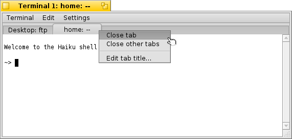

Terminal
Terminal
| Deskbar : | ||
| Localisation : | /boot/system/apps/Terminal | |
| Réglages : | ~/config/settings/Terminal ~/config/settings/profile - ajoute/surcharge les paramètres par défaut définis dans /boot/system/settings/etc/profile. ~/config/settings/inputrc - ajoute/surcharge les paramètres par défaut définis dans /boot/system/settings/etc/inputrc. |
Le Terminal est l'interface de Haiku à bash, le Bourne Again Shell.
Veuillez vous référer à la rubrique sur les Scripts, vous y trouverez quelques liens vers des tutoriels en ligne concernant le travail dans le shell, Jetez aussi un œil aux programmes en ligne de commande spécifiques à Haiku. Ici, nous traiterons seulement de l'application Terminal.
 Fenêtres et onglets
Fenêtres et onglets
Vous pouvez ouvrir autant de Terminaux que vous voulez, chacun dans sa fenêtre propre, en lançant plusieurs fois l’application Terminal ou en tapant Alt N depuis un Terminal ouvert. Vous pouvez également utiliser la vue en onglets du Terminal : utilisez la combinaison Alt T pour ouvrir un nouvel onglet.
Double-clicking into the emtpy part of the tab bar opens a new tab; onto a tab opens a dialog to rename its title. There are several %-designated variables that are explained with a tooltip when you hover the mouse over the text field.
By default, %1d: %p, a tab shows the current directory and, separated by a :, the name of the currently running process (or -- if it's just bash running, probably idling). The screenshot above shows the first tab with a FTP session in the Desktop folder and a second tab idling at home.
Via the Terminal window's title can be edited in a similar way.
Right-clicking a tab shows a context menu to , or, like double-clicking, . Un clic droit sur un onglet affiche un menu contextuel pour fermer cet onglet (), fermer les autres onglets () ou, comme un double-clic, éditer le titre de l'onglet ().
Une fenêtre du Terminal peut être redimensionnée comme toute autre fenêtre ou en utilisant le menu . Alt Entrée permet de basculer en mode plein écran.
Tous les réglages que vous changez directement depuis le menu (Réglages) comme (Titre de la fenêtre), (Taille de la fenêtre), (Encodage texte) or (Taille de la police) ne s'appliquent qu'à la session en cours. Si vous souhaitez rendre les modifications permanentes, vous devez les appliquer depuis le panneau des (Réglages...).
Réglages
ouvre un panneau pour configurer les réglages standards du Terminal.

Most of the offered settings speak for themselves. Not entirely obvious though, the font size is set in the submenu of the popup menu.
Hover your mouse over the "formulas" for naming tab and window titles to get tooltips for the available variables.
You can choose pre-defined color schema like or or create a one by selecting which color you want to change (, , etc.) and then use the color picker below.
A few more options follow: you can have a and choose to .
if you work with certain UNIX software that relies on accessing an extended portion of the ASCII character set, like e.g. GNU Emacs and the GNU readline library.
Activate the checkbox to and you'll be warned when trying to close a Terminal window while an app is still being executed.
| permet d'enregistrer différents réglages sous des profils distincts, que vous pouvez ouvrir en double-cliquant dessus pour ouvrir un terminal ainsi configuré. | ||
| restaure les réglages qui étaient actifs quand vous avez ouvert le panneau de réglage. | ||
| réinitialise toutes les réglages. |
Raccourcis claviers
Vous trouverez une liste des raccourcis utiles dans Raccourcis clavier.
Une autre fonction intéressante est une combinaison de touche et du curseur. En maintenant Altun chemin ou une URL sous le curseur est mis en évidence. Un clique gauche ouvre le fichier/ dossier ou site correspondant. Un clique droit ouvre un menu contextuel pour ou bien . Par exemple, si vous vous trouvez dans /MyData/source/haiku/ et que vous avez le chemin generated/objects/haiku/x86_gcc2/release/apps/stylededit/StyledEdit sous le curseur de la souris, vous obtiendrez le chemin absolu <Prenez un grand souffle>:
/MyData/source/haiku/generated/objects/haiku/x86_gcc2/release/apps/stylededit/StyledEdit.
Si vous maintenez enfoncé les touches Alt Maj, seul la partie allant du début du chemin jusqu'au pointeur de la souris sera mis en surbrillance.
De plus, un clique droit dans le Terminal insère le contenu du presse-papier. Combiné avec l'utilisation de la mise en surbrillance des chemins, cela permet une navigation rapide dans une arborescence de dossier.
Personnalisation du Bash
Issu du monde Unix, les possibilités de personnalisation du shell bash sont infinies. Deux fichiers sont particulièrement importants pour l'utilisateur : profile et inputrc
Ces deux fichiers peuvent être créés dans votre dossier /boot/home/config/settings/ pour se substituer aux valeurs par défaut du système qui sont configurées dans /boot/system/etc/.
profile
Le fichier profile est chargé chaque fois que vous ouvrez un nouveau Terminal. Il configure divers alias et variables qui affectent le comportement et l’apparence de bash. Vous trouverez en ligne de nombreuses ressources qui détaillent les possibilités de configuration.
« The Haiku/BeOS Tip Server » met à votre disposition quelques astuces pour vous aider à démarrer, comme :
There are more, have a look.
inputrc
Le fichier inputrc permet de configurer des équivalents claviers. Haiku fournit déjà des valeurs par défaut, vous n’aurez donc probablement pas à vous occupez de ces réglages plus compliqués. Si vous avez des besoins spécifiques, consultez des ressources en ligne, comme The GNU Readline Library.
Conseils pour travailler dans le Terminal
Déplacer un fichier ou dossier d’une fenêtre Tracker vers le Terminal insèrera son chemin à la position du curseur. Si le bouton droit de la souris est utilisé, un menu contextuel s’affichera, offrant des options additionnelles :
Insère l’emplacement du fichier, comme pour un glisser-déposer avec le bouton gauche de la souris Règle le dossier courant du shell sur le dossier déposé Crée un lien vers le fichier déposé dans le dossier courant du shell. Déplace le fichier déposé dans le dossier courant du shell. Copie le fichier déposé dans le dossier courant du shell. Vous pouvez ouvrir n'importe quel fichier avec son application préférée à l'aide de la commande open [nom de fichier]. Ça fonctionnerait aussi avec les répertoires courant (".") et parent ("..") qui alors s'ouvrent dans un fenêtre du Tracker. Ainsi, pour ouvrir le répertoire de travail actuel, vous pouvez saisir :
open .